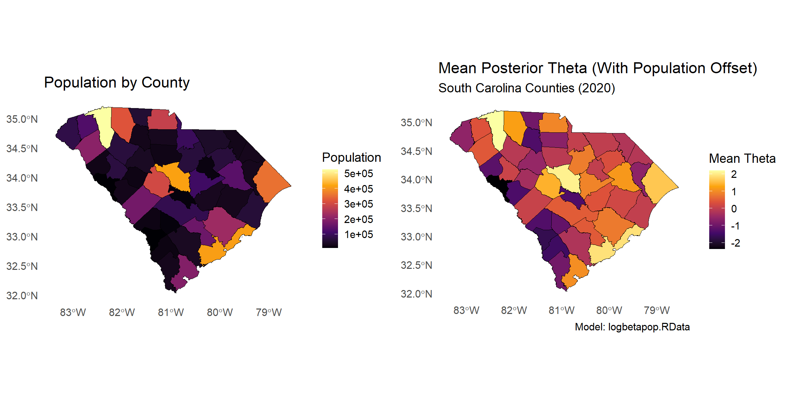
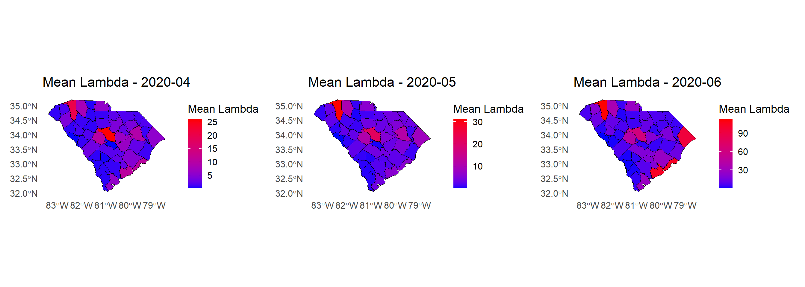

Last updated: 2025-04-28
Checks: 7 0
Knit directory: myproject_scframework/
This reproducible R Markdown analysis was created with workflowr (version 1.7.1). The Checks tab describes the reproducibility checks that were applied when the results were created. The Past versions tab lists the development history.
Great! Since the R Markdown file has been committed to the Git repository, you know the exact version of the code that produced these results.
Great job! The global environment was empty. Objects defined in the global environment can affect the analysis in your R Markdown file in unknown ways. For reproduciblity it’s best to always run the code in an empty environment.
The command set.seed(20241205) was run prior to running
the code in the R Markdown file. Setting a seed ensures that any results
that rely on randomness, e.g. subsampling or permutations, are
reproducible.
Great job! Recording the operating system, R version, and package versions is critical for reproducibility.
Nice! There were no cached chunks for this analysis, so you can be confident that you successfully produced the results during this run.
Great job! Using relative paths to the files within your workflowr project makes it easier to run your code on other machines.
Great! You are using Git for version control. Tracking code development and connecting the code version to the results is critical for reproducibility.
The results in this page were generated with repository version bd95e71. See the Past versions tab to see a history of the changes made to the R Markdown and HTML files.
Note that you need to be careful to ensure that all relevant files for
the analysis have been committed to Git prior to generating the results
(you can use wflow_publish or
wflow_git_commit). workflowr only checks the R Markdown
file, but you know if there are other scripts or data files that it
depends on. Below is the status of the Git repository when the results
were generated:
Ignored files:
Ignored: .Rproj.user/
Ignored: data/data_list_august.RData
Ignored: data/fit_allaugust.RData
Ignored: data/logbetapop.RData
Ignored: data/mean_theta_with.RData
Ignored: data/sc_counties_merged.RData
Ignored: stan_allcounties.RData
Ignored: stan_allcounties.Rmd
Ignored: stan_output.RData
Untracked files:
Untracked: data/eta_list.RDS
Untracked: data/merged_predictions_observed.RDS
Untracked: data/posterior_samples.RDS
Untracked: data/unique_county_population.csv
Untracked: myproject_clean/
Note that any generated files, e.g. HTML, png, CSS, etc., are not included in this status report because it is ok for generated content to have uncommitted changes.
These are the previous versions of the repository in which changes were
made to the R Markdown (analysis/theta_mapping.Rmd) and
HTML (docs/theta_mapping.html) files. If you’ve configured
a remote Git repository (see ?wflow_git_remote), click on
the hyperlinks in the table below to view the files as they were in that
past version.
| File | Version | Author | Date | Message |
|---|---|---|---|---|
| html | 6459417 | JMitic01 | 2025-04-28 | Build site. |
| Rmd | ea26efd | JMitic01 | 2025-04-28 | wflow_publish("analysis/theta_mapping.Rmd") |
| html | 98ecdf3 | JMitic01 | 2025-04-27 | Build site. |
| Rmd | db89035 | JMitic01 | 2025-04-27 | wflow_publish("analysis/theta_mapping.Rmd") |
| html | 2ea62f0 | JMitic01 | 2025-04-27 | Build site. |
| Rmd | ccc4f12 | JMitic01 | 2025-04-27 | wflow_publish("analysis/theta_mapping.Rmd") |
| html | 3a92610 | JMitic01 | 2025-04-27 | Build site. |
| Rmd | 95eef99 | JMitic01 | 2025-04-27 | wflow_publish(files = c("analysis/theta_mapping.Rmd", "analysis/posterior_predictions.Rmd", |
| Rmd | 0cec317 | JMitic01 | 2025-04-27 | Force remove mistakenly added submodule myproject_clean |
| html | 0cec317 | JMitic01 | 2025-04-27 | Force remove mistakenly added submodule myproject_clean |
We fit a Bayesian negative binomial model with county-specific random effects (theta) and a population offset. Here, we visualize and interpret the posterior means of county effects and their relationship to county population sizes.
We extract the posterior means of the random effects, join them with geographic and demographic data, and plot them across South Carolina counties.
# Extract theta samples
theta_samples_with <- suppressMessages(suppressWarnings(as.matrix(fit2, pars = "theta")))
mean_theta_with <- colMeans(theta_samples_with)
Y_matrix <- data_list$Y
theta_map_data_with <- data.frame(
county = rownames(Y_matrix),
mean_theta = mean_theta_with
) %>%
mutate(county = trimws(county))
options(tigris_use_cache = TRUE)
options(tigris_class = "sf")
sc_counties_sf <- suppressMessages(suppressWarnings(
tigris::counties(state = "SC", cb = TRUE, year = 2020, class = "sf")
)) %>%
mutate(NAME = trimws(NAME))
# Load and process population data
raw_df <- read_csv("C:\\Users\\jovan\\Box/BoxPHI-PHMR Projects\\Data\\Community Data\\SC County Data\\SC_covid_data_county.csv") %>%
mutate(Date = as.Date(Date, format = "%m/%d/%Y")) %>%
group_by(County) %>%
arrange(County, Date) %>%
mutate(
daily_cases = pmax(Cases - lag(Cases, default = first(Cases)), 0),
daily_deaths = pmax(Deaths - lag(Deaths, default = first(Deaths)), 0)
) %>%
ungroup()
unique_county_population <- raw_df %>%
group_by(County) %>%
summarise(population = max(Population, na.rm = TRUE)) %>%
rename(county = County)
# Merge shapefile and data
sc_counties_merged <- sc_counties_sf %>%
left_join(unique_county_population, by = c("NAME" = "county")) %>%
left_join(theta_map_data_with, by = c("NAME" = "county")) %>%
mutate(mean_theta = ifelse(is.na(mean_theta), 0, mean_theta))
# Save for future use
save(sc_counties_merged, file = 'data/sc_counties_merged.RData')
# Create Population Map
p_population <- ggplot(sc_counties_merged) +
geom_sf(aes(fill = population), color = "black") +
scale_fill_viridis_c(option = "inferno", na.value = "grey80") +
labs(title = "Population by County", fill = "Population") +
theme_minimal(base_size = 14) +
theme(
plot.background = element_rect(fill = "white", color = NA),
panel.background = element_rect(fill = "white", color = NA),
panel.grid = element_blank(),
legend.position = "right"
)
# Create Theta Map
p_theta_with <- ggplot(sc_counties_merged) +
geom_sf(aes(fill = mean_theta), color = "black", size = 0.2) +
scale_fill_viridis_c(option = "inferno", na.value = "grey80", name = "Mean Theta") +
labs(title = "Mean Posterior Theta (With Population Offset)",
subtitle = "South Carolina Counties (2020)",
caption = "Model: logbetapop.RData") +
theme_minimal(base_size = 14) +
theme(
plot.background = element_rect(fill = "white", color = NA),
panel.background = element_rect(fill = "white", color = NA),
panel.grid = element_blank(),
legend.position = "right"
)
# Arrange the two maps side by side
gridExtra::grid.arrange(p_population, p_theta_with, ncol = 2)
| Version | Author | Date |
|---|---|---|
| 2ea62f0 | JMitic01 | 2025-04-27 |
The left panel displays the 2020 county-level populations, while the
right panel visualizes the posterior mean of county-specific effects
(theta) from the Bayesian model.
Notably:
This pattern suggests that additional unmeasured county-level factors (such as socioeconomic status, healthcare access, or demographics) may influence the observed outcomes.
We also visualize the posterior mean of lambda (expected number of cases) across months April–June 2020 to examine the spatial and temporal progression of COVID-19 spread across South Carolina.
# Load eta_list if not already loaded
eta_list <- readRDS("data/eta_list.RDS")
# Compute mean and SD for eta
mean_eta <- lapply(eta_list, function(mat) colMeans(mat))
sd_eta <- lapply(eta_list, function(mat) apply(mat, 2, sd))
mean_eta_matrix <- do.call(rbind, mean_eta)
sd_eta_matrix <- do.call(rbind, sd_eta)
# Define dates and months
dates <- as.Date(colnames(data_list$Y))
months_to_plot <- c("2020-04", "2020-05", "2020-06")
# Load SC counties shapefile
sc_counties_sf <- tigris::counties(state = "SC", cb = TRUE, year = 2020, class = "sf") %>%
mutate(NAME = trimws(NAME))
# Create monthly lambda maps
library(patchwork)
lambda_mean_plots <- list()
for (month in months_to_plot) {
month_index <- which(format(dates, "%Y-%m") == month)
lambda_map_data <- data.frame(
county = rownames(data_list$Y),
mean_lambda = rowMeans(mean_eta_matrix[, month_index, drop = FALSE]),
std_error = rowMeans(sd_eta_matrix[, month_index, drop = FALSE])
) %>%
mutate(county = trimws(county))
sc_lambda_map <- sc_counties_sf %>%
left_join(lambda_map_data, by = c("NAME" = "county")) %>%
mutate(mean_lambda = ifelse(is.na(mean_lambda), 0, mean_lambda))
p <- ggplot(sc_lambda_map) +
geom_sf(aes(fill = mean_lambda), color = "black", size = 0.2) +
scale_fill_gradient(low = "blue", high = "red", na.value = "grey50") +
labs(title = paste("Mean Lambda -", month),
fill = "Mean Lambda") +
theme_minimal(base_size = 14) +
theme(
plot.background = element_rect(fill = "white", color = NA),
panel.background = element_rect(fill = "white", color = NA),
panel.grid = element_blank(),
legend.position = "right"
)
lambda_mean_plots[[month]] <- p
}
# Combine and display all three months side-by-side
combined_lambda_plot <- wrap_plots(lambda_mean_plots, ncol = 3)
print(combined_lambda_plot)
| Version | Author | Date |
|---|---|---|
| 2ea62f0 | JMitic01 | 2025-04-27 |
The monthly lambda maps reveal the spatial progression of COVID-19 activity across South Carolina:
This diffusion pattern suggests early community spread, beginning in localized areas and gradually expanding across broader regions of the state.
sessionInfo()R version 4.3.1 (2023-06-16 ucrt)
Platform: x86_64-w64-mingw32/x64 (64-bit)
Running under: Windows 11 x64 (build 26100)
Matrix products: default
locale:
[1] LC_COLLATE=English_United States.utf8
[2] LC_CTYPE=English_United States.utf8
[3] LC_MONETARY=English_United States.utf8
[4] LC_NUMERIC=C
[5] LC_TIME=English_United States.utf8
time zone: America/New_York
tzcode source: internal
attached base packages:
[1] stats graphics grDevices utils datasets methods base
other attached packages:
[1] tidyr_1.3.1 readr_2.1.5 patchwork_1.3.0
[4] gridExtra_2.3 ggplot2_3.5.1 dplyr_1.1.4
[7] sf_1.0-17 rstan_2.32.6 StanHeaders_2.32.10
[10] tigris_2.1 workflowr_1.7.1
loaded via a namespace (and not attached):
[1] tidyselect_1.2.1 viridisLite_0.4.2 timeDate_4032.109 farver_2.1.1
[5] loo_2.8.0 fastmap_1.1.1 promises_1.2.1 digest_0.6.34
[9] timechange_0.3.0 lifecycle_1.0.4 processx_3.8.3 magrittr_2.0.3
[13] compiler_4.3.1 rlang_1.1.1 sass_0.4.9 tools_4.3.1
[17] utf8_1.2.3 yaml_2.3.8 knitr_1.48 labeling_0.4.3
[21] bit_4.0.5 pkgbuild_1.4.4 classInt_0.4-10 KernSmooth_2.23-21
[25] withr_3.0.0 purrr_1.0.2 grid_4.3.1 stats4_4.3.1
[29] fansi_1.0.4 git2r_0.33.0 e1071_1.7-14 colorspace_2.1-0
[33] inline_0.3.19 scales_1.3.0 cli_3.6.1 crayon_1.5.3
[37] rmarkdown_2.27 generics_0.1.3 RcppParallel_5.1.9 rstudioapi_0.16.0
[41] httr_1.4.7 tzdb_0.4.0 DBI_1.2.3 cachem_1.0.8
[45] proxy_0.4-27 stringr_1.5.1 parallel_4.3.1 matrixStats_1.3.0
[49] vctrs_0.6.5 Matrix_1.6-5 jsonlite_1.8.8 callr_3.7.6
[53] hms_1.1.3 bit64_4.0.5 jquerylib_0.1.4 units_0.8-5
[57] glue_1.6.2 codetools_0.2-19 ps_1.7.6 lubridate_1.9.3
[61] stringi_1.8.3 gtable_0.3.5 later_1.3.2 QuickJSR_1.3.1
[65] munsell_0.5.1 tibble_3.2.1 pillar_1.9.0 rappdirs_0.3.3
[69] htmltools_0.5.8.1 R6_2.5.1 rprojroot_2.0.4 vroom_1.6.5
[73] evaluate_0.24.0 lattice_0.21-8 highr_0.11 httpuv_1.6.14
[77] bslib_0.7.0 class_7.3-22 Rcpp_1.0.13 uuid_1.2-0
[81] whisker_0.4.1 xfun_0.46 fs_1.6.3 getPass_0.2-4
[85] pkgconfig_2.0.3